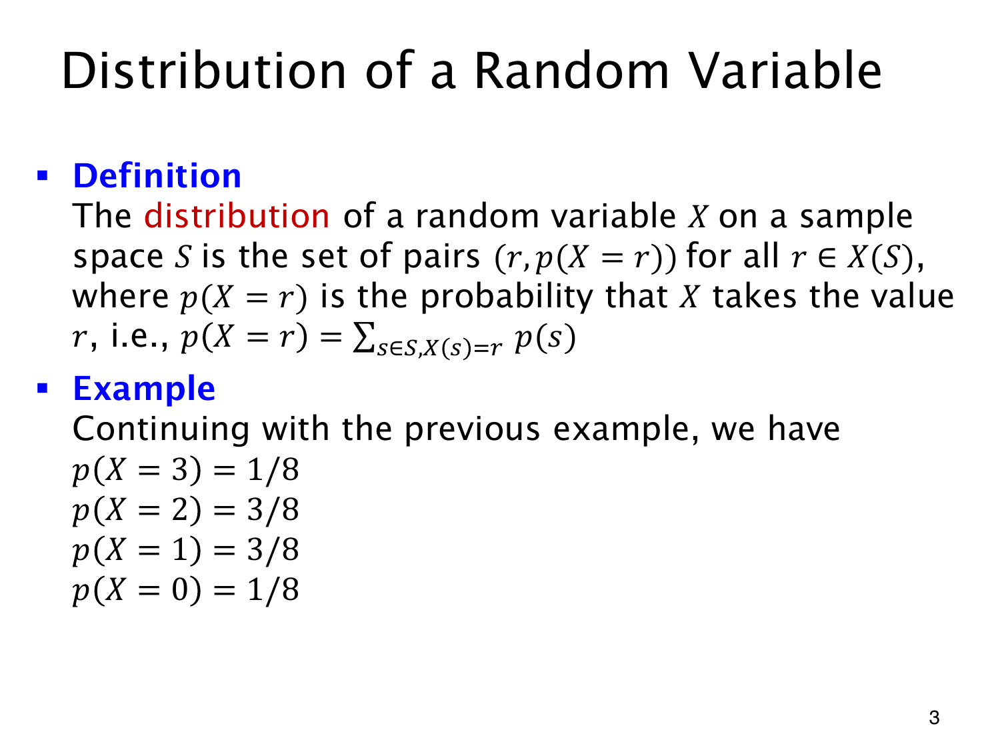

L1.11 · 第 3 页讲解原文
查看这一页课件

把同值结果的概率合起来
X(S) 是随机变量能取到的值。分布为每个 r∈X(S) 记录一对 (r,p(X=r))，其中
p(X=r)=s∈SX(s)=r∑p(s).
所有映射到 r 的结果都要计入，不能只选其中一个。
三次独立抛公平硬币，正面次数的分布为
| r | 0 | 1 | 2 | 3 |
|---|---|---|---|---|
| p(X=r) | 1/8 | 3/8 | 3/8 | 1/8 |
取值 2 对应三个序列，概率为 3/8；取值 3 只对应 HHH，概率为 1/8。各取值事件两两互斥并覆盖整个样本空间，所以表中概率相加为 1。
有了分布，便可按数值计算事件，例如
p(X≥2)=p(X=2)+p(X=3)=21.
原始序列等可能，合并后的数值却不等可能。即使“数正面个数”的函数不变，改变硬币概率或独立性假设，也会改变这张分布表。